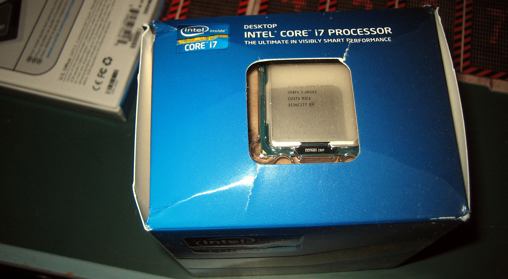

A new cpu I think could be a great addition to my gaming experience as any game that is cpu bound or the usgae of the cpu is high, the game doesn't seem to run well when it's like that with my current setup. So I would love to plead to my parents for the wonderful gift of a better cpu. If my sister finds out she might beat me up as I wish for something like this and yet she doesn't have a desktop like I do.
AMD Ryzen 5 5600X 6-core, 12-Thread (image does not show the correct cpu)

Price: $309